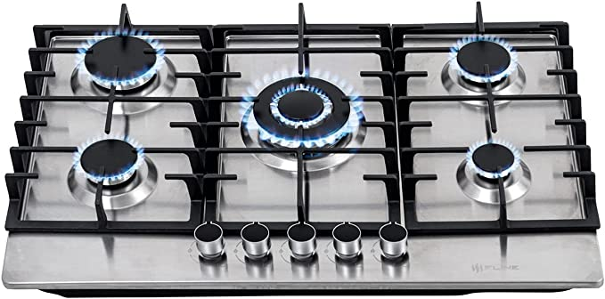

hola :D
bienvenidos a esta receta DE HOK KAKES
paso 1
Agregar 10 cucharadas de harina para hok kakes

paso 2
Agregar 1 cucharada de canela en polvo

paso 3
Agregar 1 taza de lechita

paso 4
Batir hasta que no queden grumos
no ahy img
paso 5
Agrgar la mezcla a la casuela (la casuela debe estar en la estufa y a fuego lento :)

paso 6
voltealos hasta que esten tostaos no quemados

paso 7
disfruta :D, ponle lo que quieras :DDD